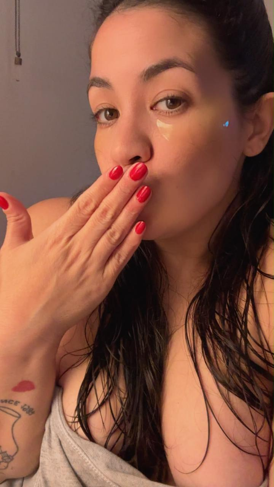

Nina Kosec
EN VIVO
Aquí sin filtros
Te sentirás mejor... ¿te animas?
Dicen que tus frutas favoritas son 🍒🍑👇🏻
Si llegaste hasta aquí es porque quieres ver más de mí, así que no seas tímido
Twitter / X